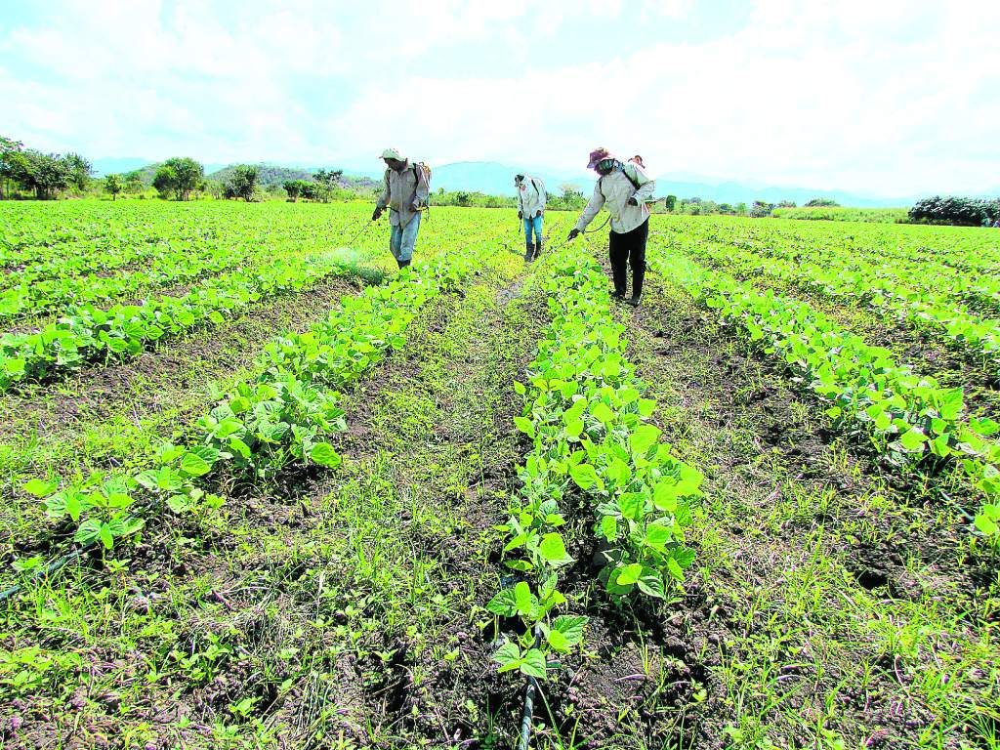
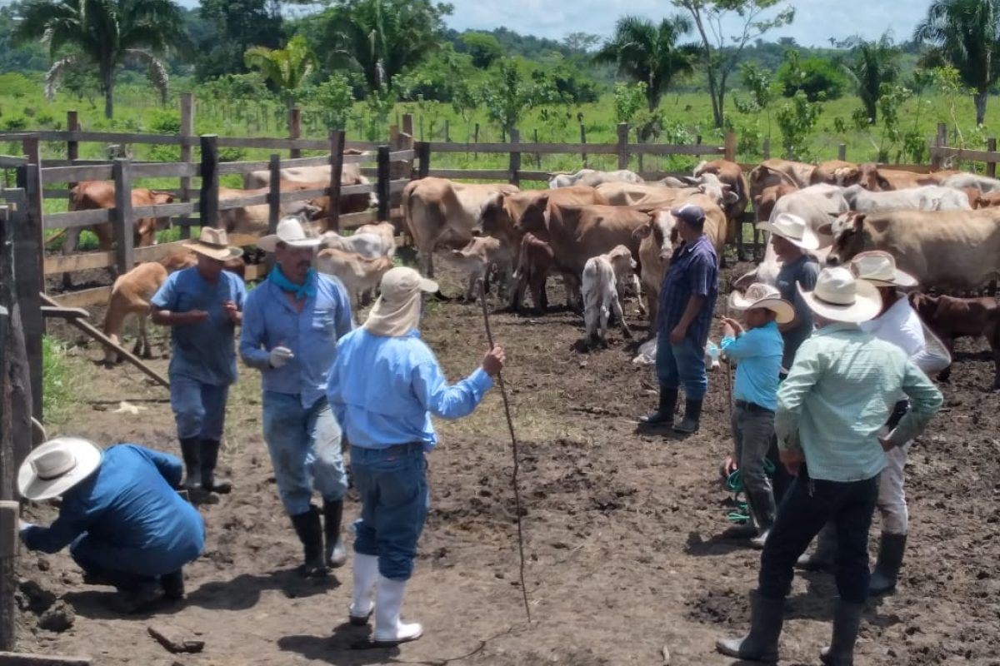
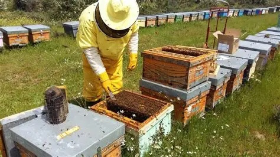
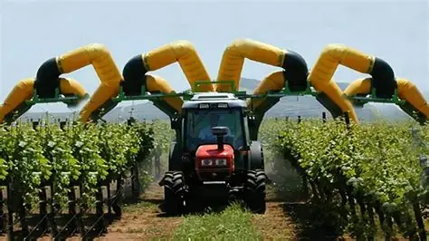
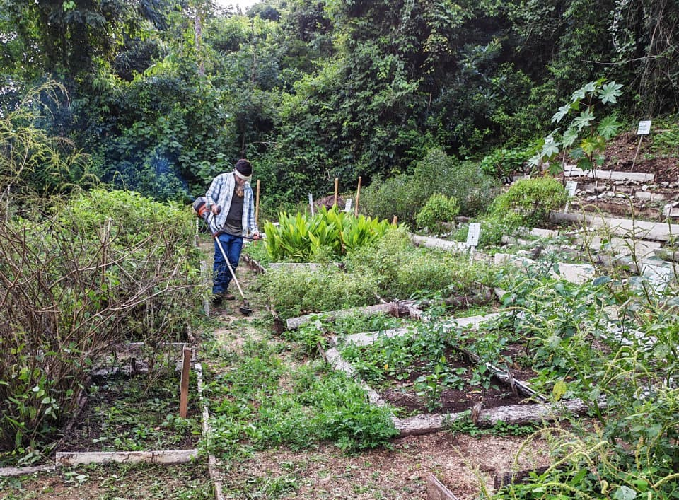

Áreas de Producción




Innovación en el Campo
La agricultura moderna combina tradición y tecnología. Drones, sensores y prácticas sostenibles están transformando la forma de cultivar la tierra para alimentar al mundo sin dañar el planeta.
Productos del Campo
